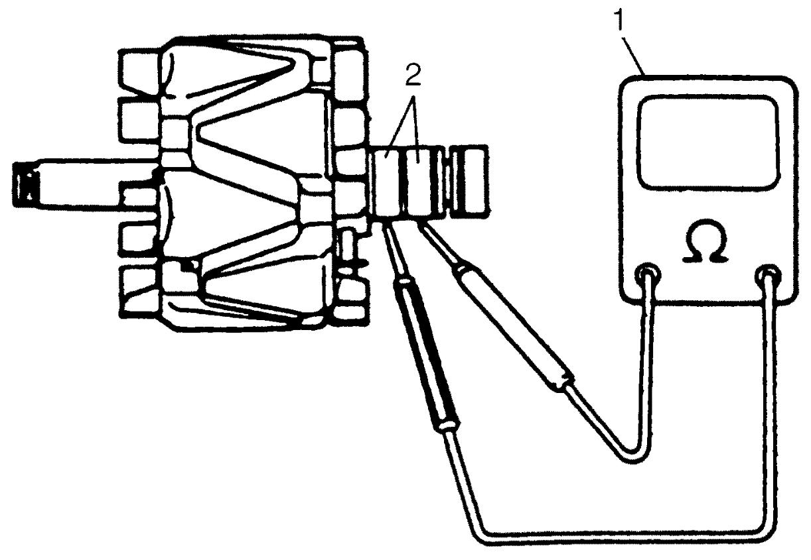
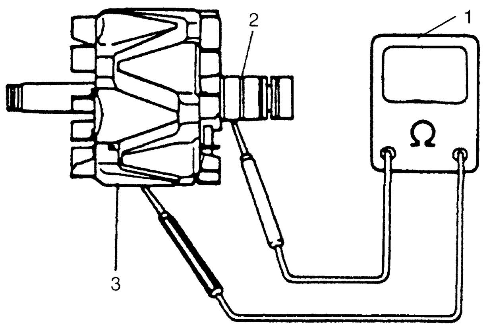
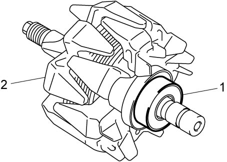
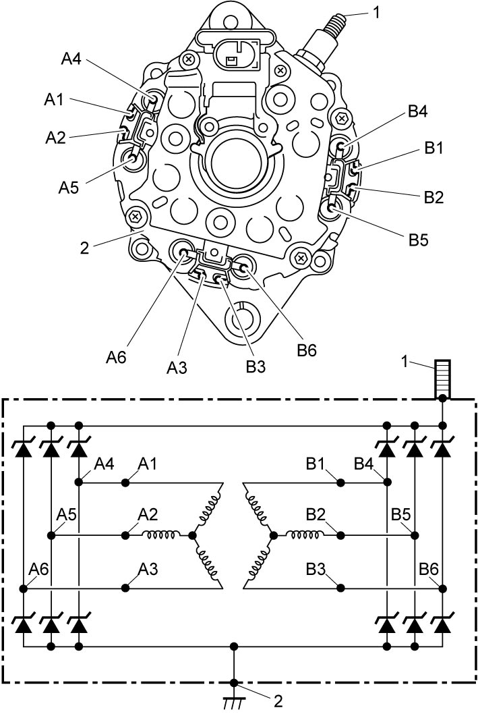
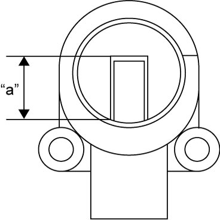

1J
| Generator Inspection |
Rotor
1)Using ohmmeter (1), check for continuity between slip rings (2) of rotor. If there is no continuity, replace rotor.

Standard resistance between slip rings of rotor
2.2 – 2.6 Ω

 "Expand image")
2)Using ohmmeter (1), check that there is no continuity between slip ring (2) and rotor core (3). If there is continuity, replace rotor.

 "Expand image")
3)Check slip rings and fan blades for damage. If any abnormality is found, replace rotor.
Bearing
Check bearing for smooth rotation.
If any abnormality is found, replace bearing.
NOTE:
Bearing (1) shown in figure is combined with rotor (2) and check it as it is. If any abnormality is found, replace rotor.

 "Expand image")
Stator
•Using ohmmeter, check continuity between each of stator coil terminals (A1 / A2 / A3) and each of stator coil terminals (B1 / B2 / B3). If there is no continuity, replace stator assembly.
•Using ohmmeter, check continuity between each of stator coil terminals (A1 / A2 / A3) and corresponding terminals (A4 / A5 / A6), and each of stator coil terminals (B1 / B2 / B3) and corresponding terminals (B4 / B5 / B6). If there is no continuity, replace stator assembly.
•Using diode range of circuit tester, check continuity between “B” terminal (1) and stator coil terminals (A4 / A5 / A6 / B4 / B5 / B6), and ground (2) and stator coil terminals (A4 / A5 / A6 / B4 / B5 / B6).
Check both directions by reversing probes of circuit tester and, if there is continuity in both directions or there is no continuity in both directions, replace stator assembly.
•Using ohmmeter, check continuity between each of stator coil terminals (A1 / A2 / A3) and corresponding terminals (A4 / A5 / A6), and each of stator coil terminals (B1 / B2 / B3) and corresponding terminals (B4 / B5 / B6). If there is no continuity, replace stator assembly.
•Using diode range of circuit tester, check continuity between “B” terminal (1) and stator coil terminals (A4 / A5 / A6 / B4 / B5 / B6), and ground (2) and stator coil terminals (A4 / A5 / A6 / B4 / B5 / B6).
Check both directions by reversing probes of circuit tester and, if there is continuity in both directions or there is no continuity in both directions, replace stator assembly.
NOTE:
For diode test, refer to the instruction manual of circuit tester.

 "Expand image")
Brush
Check each brush for wear by measuring its length as shown. If brush has worn down to service limit, replace brush holder assembly.
Exposed brush length “a”
Standard: 10.5 mm (0.41 in.)
Limit: 1.5 mm (0.06 in.)

 "Expand image")
Rectifier
NOTE:
Rectifiers are combined with stator assembly and inspection for individual rectifier is not possible.